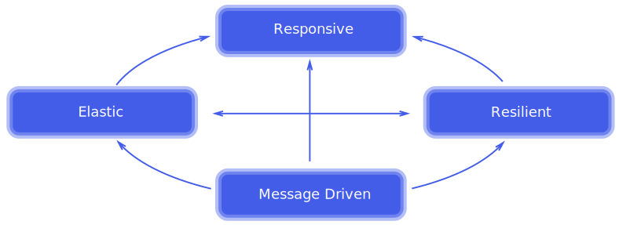

Comparing Elasticity of Reactive Frameworks
James Ward
@_JamesWard
Users Want
- In-Sync Data
- Real-time Collaboration
- Instant Feedback
- To Not Wait
Users Want Reactive Apps

Elastic
The system stays responsive under varying workload. Reactive Systems can react to changes in the input rate by increasing or decreasing the resources allocated to service these inputs. This implies designs that have no contention points or central bottlenecks, resulting in the ability to shard or replicate components and distribute inputs among them. Reactive Systems support predictive, as well as Reactive, scaling algorithms by providing relevant live performance measures. They achieve elasticity in a cost-effective way on commodity hardware and software platforms.
Elastic
Resource Contention is a conflict over access to a shared resource
- Message-Driven / Async
- Reactive All The Way Down
- Idle Threads = Contention Point
- Shared / Distributed state = Contention Point
Back Pressure
- Stream-oriented
- Sensible behavior on resource contention
- Avoids unnecessary buffering
- Iteratees, Rx, Reactive Streams
Reactive Requests & Reactive Composition

Example Use Case
Reactive composition of stateless nano-services
- Request a random number that is around 5
- Make that many requests to a random word service
- Return the random string of gibberish
Legacy - 1000 Concurrent for 1 Minute
Play - 1000 Concurrent for 1 Minute
RatPack - 1000 Concurrent for 1 Minute
NodeJS - 100 Concurrent for 1 Minute
Conclusions
- Stateless apps scale horizontally
- Reactive Composition is pretty easy
- Reactive all the way down is optimal
- Do your own load tests